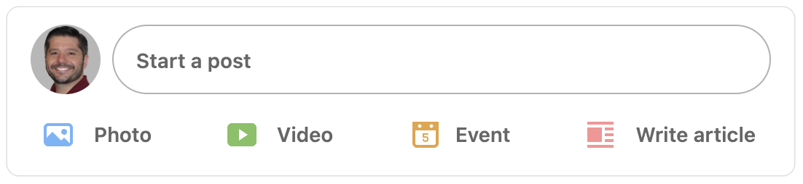

Social Media is a captive audience:
Social Media is very important to all business. Yes, even B2B. While many B2B marketers will value LinkedIn and Xing over Facebook and Instagram, this doesn’t mean these latter channels should be ignored.
In fact, further on this page you will find how Facebook and Instagram can play an important role in remarketing; getting users to re-enter the consumer funnel after they have been lost.
B2B social audience building:

While you are likely familiar with LinkedIn, many people outside of Europe have not heard of Xing. Xing is the most popular professional networking platform in DACH (Germany, Austria and Switzerland).
Social Media audience building is important because it allows for organic and free communication with the customer base.
We run a paid campaign, with the goal of increasing followers. By doing so, we increase the size of our organic audience. Impressions to this group are free of charge, meaning free advertising
Positng to your company's page is a must:
Everything you and your company post to your LinkedIn page could be seen by your followers and connections, free of charge.
This means running campaigns with the intent of growing your followership will provide you with pracatically free advertising in the future.
Having a large audience means we get Impressions, Clicks and Conversions that don’t cost a penny. Essentially, if you work to build an audience of thousands, you pay nothing to place content infront of them.
Additionally, the targeting is done for you. The User intentionally followed your page because they want to hear from you. They already bought tickets to the show.
Traditional social platforms have a place:
Social Media Advertising will also allow for effective Remarketing. You can use LinkedIn to garner clicks from your perfect B2B buyer’s persona. After they have visited your website, you can retarget them through other social channels that don’t offer the B2B buyer’s persona characteristics the “professional networking” platforms have.
Essentially, use LinkedIn to find them. Use Facebook to chase them.